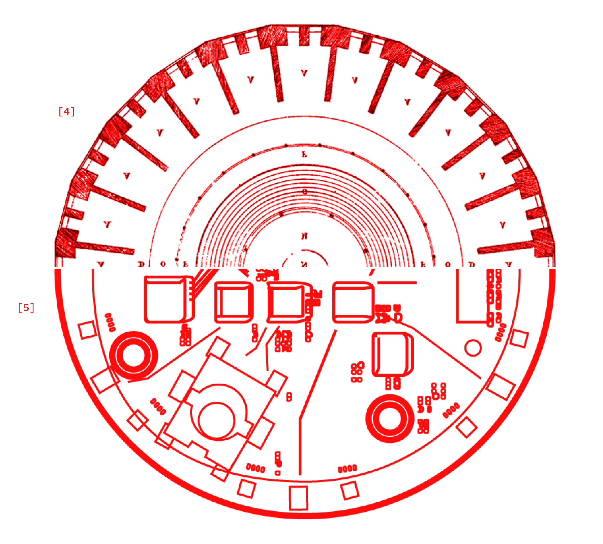

MADE BY HUMANS
“The reader must accept it as a fact that digital computers can be constructed, and indeed have been constructed, according to the principles we have described, and that they can in fact mimic the actions of a human computer very closely.” [2]
SURVEILLANCE MODEL
“This surveillance model of privacy, especially in the terminology of Foucault’s panopticon, has been the dominant model for most discourse about privacy in the new media field. This model fails to highlight certain aspects of the technical elements of new media—glossing over ways in which the institutional practices of computer system design may be antithetical to privacy, as well as ways that the tools of computer science may be able to provide effective privacy-enhancing technologies.” [1]
TRACKING
“A GPS device, for example, performs all of the necessary computation at the location of the object being tracked. At another extreme, a tracking system might employ an algorithm to locate the tracked entity within each successive video image it receives from a stationary camera. And in the middle ground between these extremes lie numerous schemes for splitting the burden of tracking” [1]
CAPTURE MODEL
“Only once the use of cryptography for new media communications has become as standard as the use of envelopes for paper communications will the easy ability of the government to violate privacy—whether considered as surveillance or capture—cease to hang over every electronic movement and data exchange. What will remain will be continual capture of private data by mega-corporations, tracking employees, customers, and passersby though every glimpse, transaction, and workplace activity” [1]
TRACKING AND LABOR
“The people whose activities are being captured will probably adjust their conduct based on their understanding of what will become of the data and what this entails for their own lives. For example, they might work faster, choose easier (or otherwise advantageous) tasks, conduct certain aspects of the activity out of the reach of the instrumentation, change course depending on patterns that might emerge from already-captured data, and so on.” [1]
